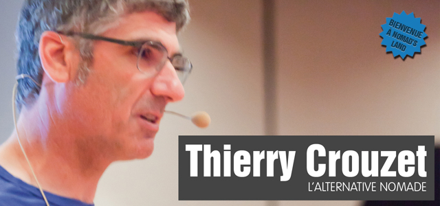

Nomade en Suisse
J'étais déconnecté... et je publie ce billet en différé pour mémoire. Pour plus détails...

Thierry Crouzet - L'alternative nomade from Rezonance on Vimeo.
J'étais déconnecté... et je publie ce billet en différé pour mémoire. Pour plus détails...
Thierry Crouzet - L'alternative nomade from Rezonance on Vimeo.